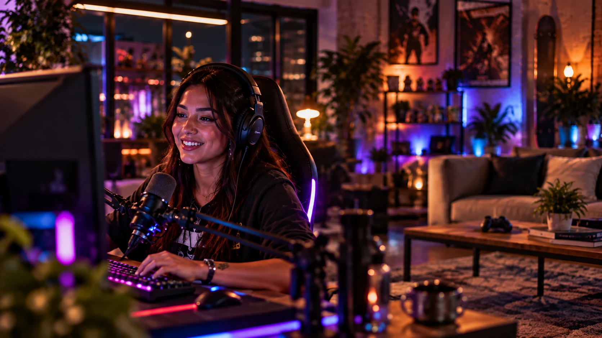

Marketing para gamers é a forma de uma marca se aproximar da comunidade que joga participando da cultura dela, e não interrompendo a partida. Funciona quando a marca entende as subcomunidades, escolhe os canais certos e oferece algo que o jogador valoriza: conteúdo, experiência ou vantagem real.
O que é marketing para gamers
Gamer não é um público único. É um conjunto de comunidades com jogos, plataformas, ídolos e piadas internas próprias. Quem joga partidas rápidas no celular no ônibus e quem treina todo dia para um campeonato compartilham o hábito, mas não a linguagem.
Por isso, marketing para gamers é menos sobre anunciar em um canal de games e mais sobre entrar em uma cultura. A publicidade para o público gamer que funciona parece parte da experiência: um item útil no jogo, uma transmissão melhor, um campeonato bem organizado, um criador que usa o produto porque faz sentido para ele.
É um dos recortes mais exigentes do marketing de comunidade. Os códigos são rígidos, a memória é longa e o retorno chega em minutos, no chat.
“Gamer não rejeita marca. Rejeita marca que atrapalha a partida.”

Marcas endêmicas e não endêmicas: o ponto de partida
Marcas endêmicas são as que já fazem parte do universo gamer: periféricos, hardware, jogos e plataformas. Marcas não endêmicas vêm de fora: bancos, bebidas, alimentação, varejo, telecom, mobilidade. As duas têm espaço, mas partem de lugares diferentes.
A marca endêmica tem permissão natural, mas é cobrada com mais rigor: o jogador conhece o produto e compara tudo. A não endêmica precisa responder uma pergunta antes de qualquer peça: qual é o meu papel aqui? Pode ser resolver uma dor real, como a conexão que cai no meio da partida, ou viabilizar algo que a comunidade quer, como um torneio, uma transmissão ou uma premiação.
Sem essa resposta, a marca vira só mais um logo na tela.
As subcomunidades do público gamer
Antes de escolher formato, mapeie com quem a marca quer falar. Na Crew, separamos quatro grandes grupos, que se misturam, mas pedem abordagens diferentes:
- Casual. Joga para relaxar, sem necessariamente se identificar como gamer. Responde bem a entretenimento, humor e recompensas simples. Não quer ser tratado como especialista.
- Mobile. É o grupo mais amplo e diverso. Joga no celular, em pausas curtas, muitas vezes em títulos gratuitos. Recompensas dentro do jogo e vídeo curto costumam funcionar melhor do que peças longas.
- Competitivo e e-sports. Acompanha times, ligas e jogadores profissionais como quem acompanha futebol. Valoriza desempenho, conhecimento técnico e respeito ao cenário. É o grupo que menos perdoa erro de informação.
- Criadores e suas audiências. Streamers e criadores de conteúdo formam comunidades em torno de si. A relação é pessoal: a audiência confia no criador, não necessariamente no jogo que ele joga.
Uma mesma marca pode falar com mais de um grupo, mas raramente com a mesma mensagem. Esse mapa é o primeiro passo do método que usamos em marketing de comunidades.
Canais: onde a comunidade gamer conversa
O território muda conforme o jogo e a subcomunidade, mas alguns canais aparecem em quase todo plano:
- Twitch e lives. Transmissões ao vivo, com chat ativo e relação próxima entre streamer e audiência. Bom para presença contínua e interação em tempo real.
- YouTube. Gameplays, tutoriais, análises e cortes. Conteúdo que segue sendo encontrado por meses.
- Discord. Onde as comunidades se organizam: servidores de jogos, de times e de criadores. É espaço de conversa, não de anúncio.
- TikTok e vídeo curto. Cortes, memes e tendências. Funciona para alcance, desde que o conteúdo nasça no formato da plataforma.
- Torneios e eventos. Campeonatos online, eventos presenciais e encontros de comunidade. É onde a marca pode viabilizar a experiência, e não só aparecer nela.
Formatos de marketing em e-sports e games
O formato certo depende do objetivo, da subcomunidade e do tempo que a marca pretende ficar. Os mais usados:
- Patrocínio de streamers. Parcerias com criadores que já falam com o público certo. Funcionam melhor em contratos de médio prazo, com briefing claro e liberdade para o criador integrar a marca do jeito dele.
- Patrocínio de times. A marca se associa a uma equipe e à torcida dela. Pede constância: a torcida lembra de quem apoiou na fase ruim, não só na vitória.
- Ativações dentro dos jogos. Itens, skins, mapas ou recompensas ligados à marca. Quando dão algo de valor ao jogador, são bem recebidos. Quando só colocam um logo no cenário, passam despercebidos.
- Torneios de marca. Campeonatos criados ou viabilizados pela marca, amadores ou semiprofissionais. Geram conteúdo e relação direta com a comunidade, mas exigem organização impecável.
- Comunidades no Discord. Um servidor próprio ou parcerias com servidores existentes, com moderação, eventos e benefícios para membros. É a base própria da marca dentro do universo gamer.
Na prática
Um exemplo ilustrativo: uma operadora de internet quer falar com jogadores competitivos. Em vez de um anúncio sobre velocidade, ela ouve servidores de Discord e descobre que a queixa mais comum é perder a partida por queda de conexão. Passa a apoiar uma liga amadora com transmissão estável, convida dois streamers do cenário para narrar as finais e abre um canal de suporte dentro do servidor da liga. A mídia paga entra depois, para levar os melhores momentos a mais gente.
Os formatos se combinam. Um patrocínio de streamer rende mais quando conversa com um torneio, e um torneio rende mais quando alimenta uma comunidade no Discord. Veja como estruturamos essa frente em marketing para gamers na Crew.
O que o público gamer rejeita na publicidade
A comunidade gamer abraça rápido uma marca que acerta e é ainda mais rápida para zoar quem erra. Os deslizes mais comuns:
- Meme forçado. Usar gírias e referências sem entender o contexto. Meme velho ou mal aplicado vira piada, e a piada é a marca.
- Interrupção. Anúncio que trava a partida, pausa a live no pior momento ou toma conta do chat. O jogador lembra de quem atrapalhou.
- Falsa autenticidade. Fingir que a marca sempre foi gamer ou colocar um criador para ler um roteiro engessado. A audiência percebe na hora.
- Erro de informação. Confundir jogos, times ou regras. Para o público competitivo, isso mostra que a marca não se deu ao trabalho de aprender.
- Aparição única. Surgir em um campeonato e sumir no dia seguinte. Presença pontual raramente cria vínculo.
O antídoto é sempre o mesmo: ouvir antes, contar com gente que vive esse universo e dar ao criador espaço para ser ele mesmo.
Como medir marketing para gamers
Visualizações e impressões contam só uma parte da história. Para saber se a marca ganhou espaço na comunidade, acompanhe também:
- Engajamento qualificado: mensagens no chat, comentários, clipes e conversas puxadas pela própria comunidade.
- Sentimento: como os jogadores falam da marca em lives, vídeos, servidores e redes, antes e depois de cada ação.
- Participação: inscrições em torneios, resgates de itens no jogo, presença em eventos e membros ativos no servidor.
- Base própria: seguidores, membros de comunidade e cadastros no CRM vindos das ações.
- Impacto em vendas: cupons e links por criador, UTMs por ativação e cruzamento com o CRM para ver quem comprou e quem voltou.
Defina a linha de base antes de começar e revise todo mês. Em ações com criadores, compare um com o outro pelo resultado, não só pelo tamanho da audiência.
Perguntas frequentes
Marca que não é do universo gamer pode fazer marketing para gamers?
Pode, desde que tenha um papel claro. Marcas não endêmicas funcionam bem quando resolvem uma dor real do jogador ou viabilizam algo que a comunidade quer, como um torneio ou uma transmissão. Colocar o logo sem propósito costuma gerar indiferença ou crítica.
É melhor patrocinar um streamer ou um time de e-sports?
Depende do objetivo. Streamers trazem proximidade e conteúdo frequente. Times trazem associação com uma torcida e com o cenário competitivo. Muitas marcas começam com criadores e evoluem para times ou torneios quando a relação amadurece.
Preciso entender de games para fazer marketing para gamers?
A marca não precisa virar especialista, mas o time que cuida da estratégia precisa. Sem alguém que vive o universo gamer, o risco de errar o tom, o jogo ou o momento é alto. Por isso vale envolver criadores e especialistas desde a escuta.
Próximo passo
Quer entender qual subcomunidade gamer faz sentido para a sua marca e como entrar nela sem parecer anúncio? Fale com a Crew ou escreva para contato@becrew.com.br.